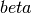
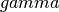
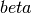
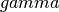
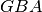

ratcave.utils package¶
Submodules¶
ratcave.utils.eulerangles module¶
Module implementing Euler angle rotations and their conversions
See:
- http://en.wikipedia.org/wiki/Rotation_matrix
- http://en.wikipedia.org/wiki/Euler_angles
- http://mathworld.wolfram.com/EulerAngles.html
See also: Representing Attitude with Euler Angles and Quaternions: A Reference (2006) by James Diebel. A cached PDF link last found here:
http://citeseerx.ist.psu.edu/viewdoc/summary?doi=10.1.1.110.5134
Euler’s rotation theorem tells us that any rotation in 3D can be
described by 3 angles. Let’s call the 3 angles the Euler angle vector
and call the angles in the vector  ,  and
. The vector is [ ,
. ] and, in this description, the order of the
parameters specifies the order in which the rotations occur (so the
rotation corresponding to is applied first).
,  and
. The vector is [ ,
. ] and, in this description, the order of the
parameters specifies the order in which the rotations occur (so the
rotation corresponding to is applied first).
In order to specify the meaning of an Euler angle vector we need to
specify the axes around which each of the rotations corresponding to
, and will occur.
There are therefore three axes for the rotations ,
and ; let’s call them 
 ,
,
 .
.
Let us express the rotation around axis i as a 3 by 3
rotation matrix A. Similarly around j becomes 3 x 3
matrix B and around k becomes matrix G. Then the
whole rotation expressed by the Euler angle vector [ ,
. ], R is given by:
R = np.dot(G, np.dot(B, A))
See http://mathworld.wolfram.com/EulerAngles.html
The order  expresses the fact that the rotations are
performed in the order of the vector ( around axis i =
A first).
To convert a given Euler angle vector to a meaningful rotation, and a rotation matrix, we need to define:
- the axes i, j, k
- whether a rotation matrix should be applied on the left of a vector to be transformed (vectors are column vectors) or on the right (vectors are row vectors).
- whether the rotations move the axes as they are applied (intrinsic rotations) - compared the situation where the axes stay fixed and the vectors move within the axis frame (extrinsic)
- the handedness of the coordinate system
See: http://en.wikipedia.org/wiki/Rotation_matrix#Ambiguities
We are using the following conventions:
- axes i, j, k are the z, y, and x axes respectively. Thus
an Euler angle vector [ , . ]
in our convention implies a radian rotation around the
z axis, followed by a rotation around the y axis,
followed by a rotation around the x axis.
- the rotation matrix applies on the left, to column vectors on the right, so if R is the rotation matrix, and v is a 3 x N matrix with N column vectors, the transformed vector set vdash is given by vdash = np.dot(R, v).
- extrinsic rotations - the axes are fixed, and do not move with the rotations.
- a right-handed coordinate system
The convention of rotation around z, followed by rotation around y, followed by rotation around x, is known (confusingly) as “xyz”, pitch-roll-yaw, Cardan angles, or Tait-Bryan angles.
- ratcave.utils.eulerangles.angle_axis2euler(theta, vector, is_normalized=False)¶
Convert angle, axis pair to Euler angles
Parameters: - theta (scalar) – angle of rotation
- vector (3 element sequence) – vector specifying axis for rotation.
- is_normalized (bool, optional) – True if vector is already normalized (has norm of 1). Default False
Returns: - z (scalar)
- y (scalar)
- x (scalar) – Rotations in radians around z, y, x axes, respectively
Examples
>>> z, y, x = angle_axis2euler(0, [1, 0, 0]) >>> np.allclose((z, y, x), 0) True
Notes
It’s possible to reduce the amount of calculation a little, by combining parts of the angle_axis2mat and mat2euler functions, but the reduction in computation is small, and the code repetition is large.
- ratcave.utils.eulerangles.euler2angle_axis(z=0, y=0, x=0)¶
Return angle, axis corresponding to these Euler angles
Uses the z, then y, then x convention above
Parameters: - z (scalar) – Rotation angle in radians around z-axis (performed first)
- y (scalar) – Rotation angle in radians around y-axis
- x (scalar) – Rotation angle in radians around x-axis (performed last)
Returns: - theta (scalar) – angle of rotation
- vector (array shape (3,)) – axis around which rotation occurs
Examples
>>> theta, vec = euler2angle_axis(0, 1.5, 0) >>> print(theta) 1.5 >>> np.allclose(vec, [0, 1, 0]) True
- ratcave.utils.eulerangles.euler2mat(z=0, y=0, x=0)¶
Return matrix for rotations around z, y and x axes
Uses the z, then y, then x convention above
Parameters: - z (scalar) – Rotation angle in radians around z-axis (performed first)
- y (scalar) – Rotation angle in radians around y-axis
- x (scalar) – Rotation angle in radians around x-axis (performed last)
Returns: M – Rotation matrix giving same rotation as for given angles
Return type: array shape (3,3)
Examples
>>> zrot = 1.3 # radians >>> yrot = -0.1 >>> xrot = 0.2 >>> M = euler2mat(zrot, yrot, xrot) >>> M.shape == (3, 3) True
The output rotation matrix is equal to the composition of the individual rotations
>>> M1 = euler2mat(zrot) >>> M2 = euler2mat(0, yrot) >>> M3 = euler2mat(0, 0, xrot) >>> composed_M = np.dot(M3, np.dot(M2, M1)) >>> np.allclose(M, composed_M) True
You can specify rotations by named arguments
>>> np.all(M3 == euler2mat(x=xrot)) True
When applying M to a vector, the vector should column vector to the right of M. If the right hand side is a 2D array rather than a vector, then each column of the 2D array represents a vector.
>>> vec = np.array([1, 0, 0]).reshape((3,1)) >>> v2 = np.dot(M, vec) >>> vecs = np.array([[1, 0, 0],[0, 1, 0]]).T # giving 3x2 array >>> vecs2 = np.dot(M, vecs)
Rotations are counter-clockwise.
>>> zred = np.dot(euler2mat(z=np.pi/2), np.eye(3)) >>> np.allclose(zred, [[0, -1, 0],[1, 0, 0], [0, 0, 1]]) True >>> yred = np.dot(euler2mat(y=np.pi/2), np.eye(3)) >>> np.allclose(yred, [[0, 0, 1],[0, 1, 0], [-1, 0, 0]]) True >>> xred = np.dot(euler2mat(x=np.pi/2), np.eye(3)) >>> np.allclose(xred, [[1, 0, 0],[0, 0, -1], [0, 1, 0]]) True
Notes
The direction of rotation is given by the right-hand rule (orient the thumb of the right hand along the axis around which the rotation occurs, with the end of the thumb at the positive end of the axis; curl your fingers; the direction your fingers curl is the direction of rotation). Therefore, the rotations are counterclockwise if looking along the axis of rotation from positive to negative.
- ratcave.utils.eulerangles.euler2quat(z=0, y=0, x=0)¶
Return quaternion corresponding to these Euler angles
Uses the z, then y, then x convention above
Parameters: - z (scalar) – Rotation angle in radians around z-axis (performed first)
- y (scalar) – Rotation angle in radians around y-axis
- x (scalar) – Rotation angle in radians around x-axis (performed last)
Returns: quat – Quaternion in w, x, y z (real, then vector) format
Return type: array shape (4,)
Notes
We can derive this formula in Sympy using:
- Formula giving quaternion corresponding to rotation of theta radians about arbitrary axis: http://mathworld.wolfram.com/EulerParameters.html
- Generated formulae from 1.) for quaternions corresponding to theta radians rotations about x, y, z axes
- Apply quaternion multiplication formula - http://en.wikipedia.org/wiki/Quaternions#Hamilton_product - to formulae from 2.) to give formula for combined rotations.
- ratcave.utils.eulerangles.mat2euler(M, cy_thresh=None)¶
Discover Euler angle vector from 3x3 matrix
Uses the conventions above.
Parameters: - M (array-like, shape (3,3)) –
- cy_thresh (None or scalar, optional) – threshold below which to give up on straightforward arctan for estimating x rotation. If None (default), estimate from precision of input.
Returns: - z (scalar)
- y (scalar)
- x (scalar) – Rotations in radians around z, y, x axes, respectively
Notes
If there was no numerical error, the routine could be derived using Sympy expression for z then y then x rotation matrix, which is:
[ cos(y)*cos(z), -cos(y)*sin(z), sin(y)], [cos(x)*sin(z) + cos(z)*sin(x)*sin(y), cos(x)*cos(z) - sin(x)*sin(y)*sin(z), -cos(y)*sin(x)], [sin(x)*sin(z) - cos(x)*cos(z)*sin(y), cos(z)*sin(x) + cos(x)*sin(y)*sin(z), cos(x)*cos(y)]
with the obvious derivations for z, y, and x
z = atan2(-r12, r11) y = asin(r13) x = atan2(-r23, r33)Problems arise when cos(y) is close to zero, because both of:
z = atan2(cos(y)*sin(z), cos(y)*cos(z)) x = atan2(cos(y)*sin(x), cos(x)*cos(y))
will be close to atan2(0, 0), and highly unstable.
The cy fix for numerical instability below is from: Graphics Gems IV, Paul Heckbert (editor), Academic Press, 1994, ISBN: 0123361559. Specifically it comes from EulerAngles.c by Ken Shoemake, and deals with the case where cos(y) is close to zero:
See: http://www.graphicsgems.org/
The code appears to be licensed (from the website) as “can be used without restrictions”.
- ratcave.utils.eulerangles.quat2euler(q)¶
Return Euler angles corresponding to quaternion q
Parameters: q (4 element sequence) – w, x, y, z of quaternion Returns: - z (scalar) – Rotation angle in radians around z-axis (performed first)
- y (scalar) – Rotation angle in radians around y-axis
- x (scalar) – Rotation angle in radians around x-axis (performed last)
Notes
It’s possible to reduce the amount of calculation a little, by combining parts of the quat2mat and mat2euler functions, but the reduction in computation is small, and the code repetition is large.
ratcave.utils.gl module¶
- class ratcave.utils.gl.FBO¶
Bases: tuple
FBO(id, texture, texture_slot, size)
- __getnewargs__()¶
Return self as a plain tuple. Used by copy and pickle.
- __getstate__()¶
Exclude the OrderedDict from pickling
- __repr__()¶
Return a nicely formatted representation string
- id¶
Alias for field number 0
- size¶
Alias for field number 3
- texture¶
Alias for field number 1
- texture_slot¶
Alias for field number 2
- ratcave.utils.gl.create_fbo(texture_type, width, height, texture_slot=0, color=True, depth=True, grayscale=False)¶
- ratcave.utils.gl.create_opengl_object(gl_gen_function, n=1)¶
Returns int pointing to an OpenGL texture
- ratcave.utils.gl.create_vao(vertices, normals, texture_uvs)¶
Puts mesh vertex data and puts it into an OpenGL Vertex Array Object.
Parameters: - vertices (Nx3 NumPy Array) – 3D vertex positions
- normals (Nx3 NumPy Array) – 3D normal directions, one for each vertex
- texture_uvs (Nx2 NumPy Array) – 2D texture UV coordinates, one for each vertex.
Returns: vao
- class ratcave.utils.gl.render_to_fbo(window, fbo)¶
Bases: object
A context manager that sets the framebuffer target and resizes the viewport before and after the draw commands.
- ratcave.utils.gl.setpriority(pid=None, priority=1)¶
Set The Priority of a Windows Process. Priority is a value between 0-5 where 2 is normal priority. Default sets the priority of the current python process but can take any valid process ID.
- ratcave.utils.gl.vec(floatlist, newtype='float')¶
Makes GLfloat or GLuint vector containing float or uint args. By default, newtype is ‘float’, but can be set to ‘int’ to make uint list.
ratcave.utils.orienting module¶
- ratcave.utils.orienting.rotate_to_var(markers)¶
Returns degrees to rotate about y axis so greatest marker variance points in +X direction
ratcave.utils.script_utils module¶
- ratcave.utils.script_utils.correct_orientation_motivepy(rb, n_attempts=3)¶
- ratcave.utils.script_utils.correct_orientation_natnet(rb, n_attempts=3)¶
Assumes the orientation is reset already (need MotivePy to do it automatically) to account for between-session arena shifts
- ratcave.utils.script_utils.motive_camera_vislight_configure()¶
- ratcave.utils.script_utils.update_world_position_motivepy(meshes, arena_rb, additional_rot_y_rotation)¶
# Update the positions of everything, based on the MotivePy data of the arena rigid body
- ratcave.utils.script_utils.update_world_position_natnet(meshes, arena_rb, additional_rot_y_rotation)¶
# Update the positions of everything, based on the MotivePy data of the arena rigid body
ratcave.utils.timers module¶
- ratcave.utils.timers.countdown_timer(total_secs, stop_iteration=False)¶
Generates an iterator that returns the time remaining from total_time (secs). Returns 0.0 when time is up, unless stop_iteration is True.
- ratcave.utils.timers.dt_timer()¶
A Generator that returns the time since last called. Never returns StopIteration.